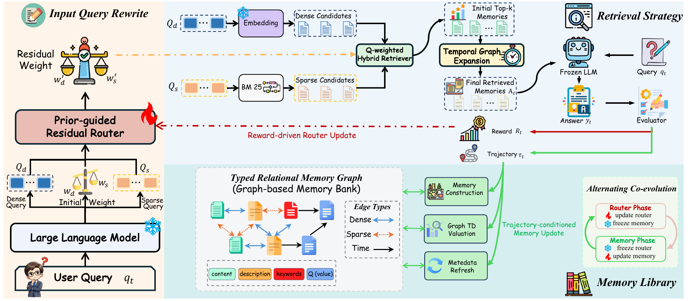

01研究背景与问题定义
长期记忆并不是一个独立资料库。检索器先决定哪些条目进入模型上下文，也就决定哪些条目有机会得到任务反馈；记忆的价值和关系一旦改变，又会改变下次的检索状态。如果检索策略与记忆库各自优化，旧策略可能不适应新库，新库也可能只反映旧策略反复选择的内容。
CoEvo-Mem 将这种双向依赖作为研究对象。它保持回答模型固定，学习密集/稀疏检索的路由，同时让记忆价值、关系和检索元数据随交互演化；训练按阶段只更新一侧。贡献不在简单合并两个模块，而在明确两者通过“最终暴露给回答模型的条目集合”交换学习信号。
| 对象 | 更新方式 | 保持边界 |
|---|---|---|
| 检索路由 | 终局奖励更新 residual router | 不训练负责回答的大模型 |
| 记忆价值与关系 | 轨迹、结果与模型归因共同更新 | 不把金标准答案写成记忆 |
| 检索元数据 | 按通道失败统计修复描述、词或时序关系 | 保留原始记忆内容及其来源 |
| 验证与测试 | 完全冻结路由与记忆状态 | 预测和评估输出不回流训练 |
02方法与技术路线
查询先分解语义意图与精确词项，路由决定两类证据权重；检索到的少量条目进入回答上下文。反馈回流哪一侧由当前训练阶段决定。
SR-QR + Residual Router
冻结 LLM 生成 dense/sparse 查询改写和初始路由先验；可训练残差在对数先验上调整融合权重。
Typed Relational Retrieval
先取种子，再补充时序邻居并重新排序，只将最终 top-k 集合 A 交给回答模型。
Router 阶段：图只读
探索连续通道混合，奖励驱动路由学习，KL 约束防止无依据偏离先验。
Memory 阶段：路由冻结
蒸馏轨迹、评估暴露记忆贡献、更新 Q 并沿类型边传播，插入新记忆。
路由学习是对先验的残差修正
SR-QR 让 dense 改写保留语义，sparse 改写保留实体、版本、数字等精确信号。残差头最后一层零初始化，因此起点等于经平滑的 LLM 路由先验；训练从任务收益中学习何时偏离它，而不是从零重建检索知识。
路由阶段通过 Beta 分布探索连续混合权重，用标量任务奖励的 score-function 梯度优化，并用 KL 拉住先验。记忆阶段与推理改用均值，停止探索。若改写响应失效，则使用均衡权重和原查询作保守回退，保证能得到合法检索请求。
类型图与最终暴露集合的语义
Dense 和 Sparse 边分别对应语义相近与词项重叠，互为双向；Time 边表示前后续接或修订，方向从早到晚。它们不是泛化知识图谱关系，而是与具体检索通道对齐的可用线索。
融合使用各改写列表的排名并按列表数量归一，避免某通道仅因生成更多改写就获得更多权重。初始种子引入时序邻居后重新计算排名，邻居并非无条件加分。只有最终进入上下文的集合 A 得到直接暴露统计与信用，不能把所有召回候选都当作已影响答案。
记忆价值怎样更新，以及为何要控制图传播
每条训练交互无论成功与否都可形成新记忆，保留来源；模型只看生成轨迹和标量结果做归因，不读金标准或纠正答案。暴露条目的即时信号是任务奖励乘以其归因贡献，再结合新经验的继承价值形成 TD 风格残差。
相关记忆可沿类型边得到衰减信用，选择最强路径而非把所有路径相加，并跨多个暴露条目取平均，防止高连接度凭拓扑机械放大价值。这里的 Q 是检索效用估计，模型给出的贡献也不是干预意义的因果贡献；图传播有效仍需实验验证。
为什么交替，而不是边检索边改所有东西
Router 阶段图、价值、元数据和统计只读，提供相对稳定的学习目标；Memory 阶段路由固定，才能把价值与关系变化归给同一检索策略下的经验。空库先构建记忆再开始路由，避免在没有检索对象时训练空决策。
元数据修复还区分通道：语义失败改描述与语义边，词项失败改关键词，时间失败重查时序关系，而不重写保留内容。它依赖的是暴露后的成功统计，和模型给出的单次贡献分数不是同一个信号。
论文原始结构图 · 点击对照

03实验设计与结果分析
共同适应是否比固定一侧更有价值
| 任务 | 完整 | 无 SR-QR | 无记忆演化 | 同时更新 | 只做两阶段 |
|---|---|---|---|---|---|
| GPQA Diamond | 68.33 | 60.0 | 58.33 | 66.67 | 63.33 |
| LiveCodeBench | 55.24 | 50.48 | 47.62 | 52.38 | 51.43 |
| BFCL thinking | 64.69 | 59.74 | 58.75 | 61.39 | 60.06 |
两侧都重要，严格交替也优于同时更新与不再回头的两阶段，支持非平稳耦合确实值得处理。但“同时更新”差距也可能受学习率与阶段预算影响；应理解为本文配置下的较优调度，而非交替在所有共同学习问题上的理论优势。
不能忽略固定记忆条件的相对弱项
| 系统 | LoCoMo-MC | LongMemEval-MC |
|---|---|---|
| CoEvo-Mem | 71 | 64 |
| ElasticMem | 84 | 76 |
自由问答的完整共同适应在 LoCoMo 达到 81.71，但固定记忆多选协议关闭了记忆演化，此时匹配骨干下落后于可训练模型集成记忆方法。两种协议检验的对象不同：前者支持完整系统效用，后者显示冻结回答模型的外部检索并不始终最强。不能只选有利结果概括为全面最优。
04贡献、局限与综合评价
贡献是把选择偏差与记忆更新连成一个学习问题
检索不仅读取知识，还决定什么经验被看见、能从什么结果获得信用。CoEvo-Mem 对这一闭环给出了可执行的耦合接口、类型图和阶段更新语义，因而可区分策略、记忆内容与元数据的变化。
外部状态演化的收益与冻结协议要同时看
完整自由问答允许记忆经历训练演化，固定图多选则只检验路由。两种结果一强一弱并不矛盾，而是说明系统收益依赖可改变的状态。模型集成方法在固定记忆协议更强，提示参数化压缩或编码仍可能提供外部检索无法替代的优势。因此更准确的结论是共同适应改善了特定外部记忆接口，而非外部记忆在所有条件下优于内部表示；选择方法时必须连同可训练对象和评估冻结边界一起理解。
模型归因信用仍可能形成自我强化
如果一条常被检索的记忆被模型高估贡献，它会提高 Q、在融合中更容易再次入选，并向邻居传播。这可能是有效经验扩散，也可能是曝光偏差的放大。阶段冻结稳定了优化目标，却不自动校正归因偏误。
应在相同路由下随机屏蔽或替换部分已暴露条目，测其真实边际作用，再比较 Q 与因果影响的相关性；同时记录未入选记忆的探索覆盖。若高 Q 与真实作用脱节，收益应更多归给检索启发式，而不是可信的价值学习。现有跨任务与调度消融支持共同适应有效，对记忆效用估计本身的因果解释仍需保留界限。